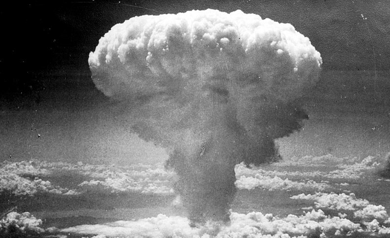
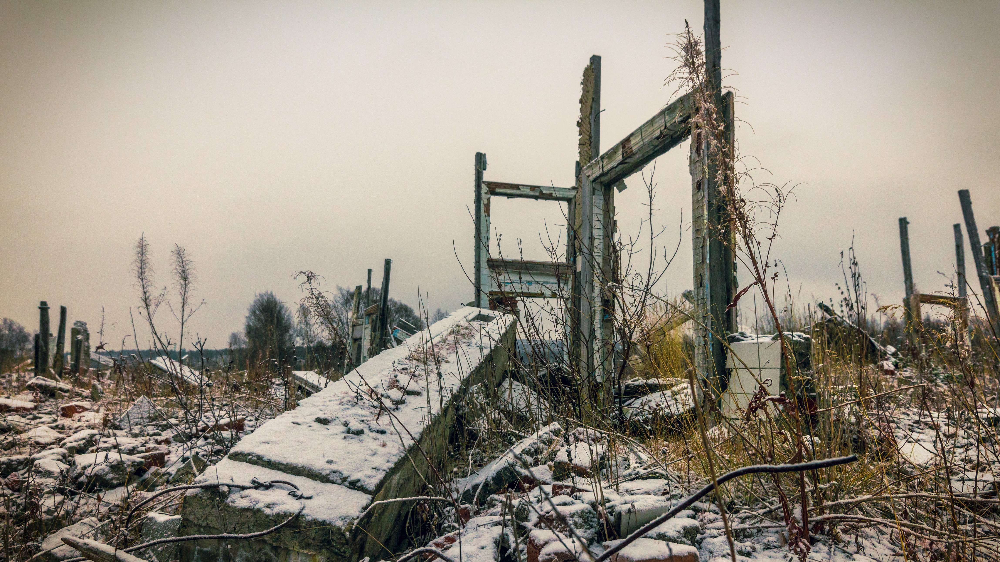
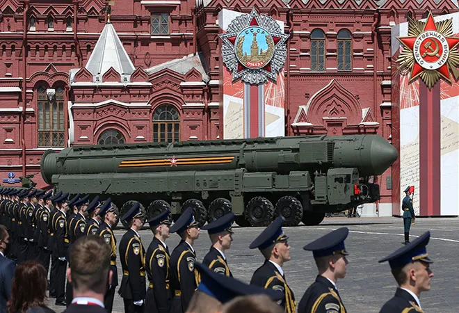

A nukleáris fegyverek kifejlesztése az 1940-es évek végén kezdődött, a Manhattan-terv keretében. 1945-ben az Egyesült Államok Japán két városát, Hirosimát és Nagaszakit atomtámadással sújtotta, melyek a második világháború végét is elhozták. Azóta a világ számos állama kifejlesztette saját nukleáris fegyvereit, és a hidegháború idején különösen intenzív fegyverkezési verseny alakult ki a Szovjetunió és az Egyesült Államok között. Az atomfegyverek hatalmas pusztító ereje és a kölcsönös megsemmisítés elmélete ("MAD" - Mutually Assured Destruction) hozzájárultak ahhoz, hogy a világ a hidegháború végére elkerülte a nukleáris háborút, bár a feszültségek sosem szűntek meg teljesen.

A nukleáris fegyverek hatása nemcsak katonai, hanem emberi és környezeti szempontból is mérhetetlen. Az atomrobbanás hatásai azonnali pusztítást okoznak, a hőhatás, a sugárzás és a robbanás ereje hatalmas emberi áldozatokat követelhet. Azonban a hosszú távú következmények is rendkívül súlyosak: a radioaktív sugárzás évtizedekre, akár évszázadokra is fertőzheti a környezetet, rákot, genetikai rendellenességeket és más súlyos betegségeket okozva a túlélők körében.
A nukleáris háború kockázata nemcsak a közvetlen pusztítást jelenti, hanem a globális éghajlatra gyakorolt hatásokat is. A tudósok figyelmeztetnek arra, hogy egy nagy léptékű atomcsapás az úgynevezett "nukleáris tél" jelenséghez vezethet, amely hosszú időre blokkolhatja a napfény eljutását a Földre, ami globális éhínséget és súlyos ökológiai válságot eredményezhet.
A nukleáris fegyverek elterjedése és használata ellenére az atomfegyverekkel kapcsolatos nemzetközi szabályozás és leszerelési törekvések folyamatosan jelen vannak. Az 1968-ban létrejött Nukleáris Fegyvereket Nem Terjesztő Szerződés (NPT) célja, hogy megakadályozza a nukleáris fegyverek további elterjedését, miközben elősegíti a meglévő készletek csökkentését és az atomenergia békés célú felhasználását. Az NPT egyensúlyt próbál teremteni a nukleáris fegyverekkel rendelkező országok és azok között, akik nem birtokolják őket.
Emellett több nemzetközi szervezet és kezdeményezés dolgozik a nukleáris leszerelés előmozdításán, például az Atomcsend Egyezmény (CTBT), amely célja az atomrobbantások teljes tilalma a Földön, valamint a Nemzetközi Atomenergia-ügynökség (IAEA), amely az atomenergia békés célú felhasználását felügyeli.

A nukleáris fegyverek jövője kétségkívül az egyik legnagyobb globális biztonsági kihívás. Míg számos ország az atomfegyverek leszerelésére törekszik, a világszerte növekvő feszültségek és a geopolitikai rivalizálás újabb fenyegetéseket jelentenek. Az atomfegyverek elterjedésének megakadályozása érdekében a nemzetközi közösségnek szorosabb együttműködésre és kompromisszumokra van szüksége.
A globális béke és biztonság érdekében mindenkinek tisztában kell lennie a nukleáris fegyverek kockázatával, és mindent meg kell tennünk annak érdekében, hogy soha ne kerüljenek felhasználásra. Az oktatás, a párbeszéd és a diplomácia kulcsfontosságú szerepet játszanak abban, hogy a jövő generációi egy biztonságosabb világban élhessenek, mentesen a nukleáris háború fenyegetésétől.
